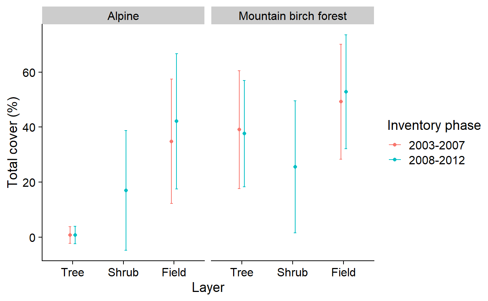
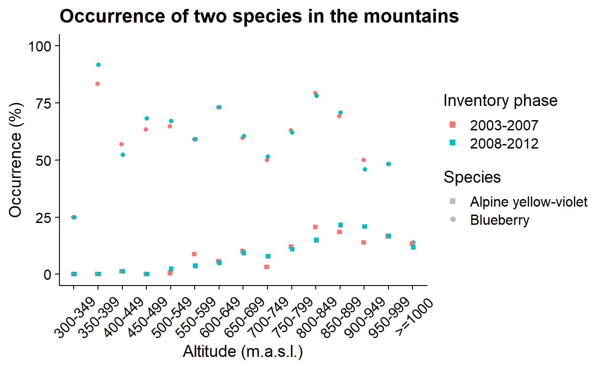

Chapter 7 Query data from NILS
7.1 A brief intro to NILS
On behalf of the Swedish Environmental Protection Agency, SLU documents, through NILS (National Inventory of the Landscape in Sweden), landscape and vegetation changes in Sweden and thus how the conditions for biological diversity look and change over time. NILS’ base inventory took place in the years 2003 to 2018 throughout Sweden and in the years 2019 to 2020 only in the mountains. The purpose of the inventory was to collect data in the field, analyze and present estimates of conditions and changes. The inventory is based on a random sample of permanent sample areas. It takes five years to complete an inventory lap; round 1 ran from 2003 to 2007, round 2 from 2008 to 2012, etc. The data is collected via field inventory in sample areas and transects. In the sample area inventory, data is partly collected in larger circular sample areas with a radius of 10 meters and in small sample areas with a radius of 0.28 m where mainly species, species groups, habitat types and other classifications are recorded. More information about design and methodology can be found here and here (in Swedish).
![The map shows the location of stratum 10 (gray), i.e., the Swedish mountain region, and the 145 systematically placed 5 × 5 km sample units (red). The 12 circular sample plots is in the center of the sample unit with a distance of 250 m between the centers of each plot and a distance of 2125 m between the centers of each plot and the edge of the 5 × 5 km2. Each plot consists of two concentric circular plots, and different variables are recorded in these plots. Canopy cover is estimated in the 20-m radius plot, and shrub cover, cover of field vegetation, and cover of the bottom layer are estimated in the 10-m radius plot. The sample plot is divided into subplots if the sample plot contains distinct areas of different types of land use or land cover etc. (Esseen et al. 2007). The figure also shows a list of the field variables used in this study sorted size of the circular sample plots.](images/hedenas_%20fig1_map-shows-the-location-of-stratum.png)
This inventory contributes with an environmental target indicator for monitoring the environmental target “A magnificent mountain environment” - monitoring of vegetation changes in the mountains.
All inventory data can be downloaded without registering and is available at NILS datavärdskap. The data is also available via REST APIs (Application Program Interface). More documentation can be found at Swagger description of NILS’ APIs. APIs are suitable for a replicable and streamlined analysis sending queries directly to the database therefore avoiding the unnecessary download of complete data sets. REST APIs are URL (a web address) with endpoint paths to resources and parameters for filtering the query. REST API URLs are often composed as follows:
Base URL: http://apiserver.com
Endpoint Path: /homes for the resource ‘homes’
Query String: ?limit=5&format=json
Rest API URL: BaseURL + Endpoint path +Query string
7.2 Vegetation cover in two time periods
Here and in the next chapter we show examples of how to integrate these APIs in your workflow. The first example replicates Fig.3 a and b from (Hedenås, Christensen, and Svensson 2016).
# Set up
library(jsonlite)
library(dplyr)
library(tidyr)
library(conflicted)
conflicts_prefer( dplyr::select, dplyr::filter)
library(glue)
library(ggplot2)
library(sf)The endpoint ‘Klasser’ points to the table with all categorical data sampled within mountain areas, that is forest type, type of land cover. (Note: only for the mountain areas at the moment).
urlApi <- 'https://landskap.slu.se/api/nils/api/'
endpoint <- 'Klasser'
klasserUrl <- url(glue('{urlApi}{endpoint}'))
klasserGet <- fromJSON(klasserUrl)
klasser <- klasserGet$dataThis is exactly what we what to avoid. We want to filter the query to obtain a restricted data set only containing data collected between 2003 and 2012.
urlApi <- 'https://landskap.slu.se/api/nils/api/'
years <- paste0('Ar=',c(2003:2012), collapse = '&')
endpoint <- 'Klasser'
klasserUrl <- url(glue('{urlApi}{endpoint}?{years}'))
klasserGet <- fromJSON(klasserUrl)
klasser <- klasserGet$dataWe also want some data from the table ‘Vegetationstackning’ that contains the cover (%) of different vegetation layers. In this case, however, we don’t want to preserve all columns, just those that are unique in the classes table.
endpoint <- 'Vegetationstackning'
vegetationUrl <- url(glue('{urlApi}{endpoint}?{years}'))
vegetationGet <- fromJSON(vegetationUrl)
vegetation <- vegetationGet$data |>
select(-c("koordNS","koordEW","lan","kommun","bioGeoRegion","stratum"))
# Ta bort de kolumner som finns i bägge apierna och som inte behövs för att slå samman tabellernaThen, following (Hedenås, Christensen, and Svensson 2016) we proceed to:
filter out the the irrelevant ‘lan’ and leave only the mountain types “Fjällbjörkskog”, “Område ovan SKOGSgränsen”;
join these tables by those fields that they have in common: “ar”,“rutaNummer”, “provytaNummer”,“delytaNummer”; and
generate a categorical variable for the inventory phase (in NILS, every sample area is visited once within five years)
klassVegetation <- klasser |>
filter(lan != "Utlandet",
fjalltyp %in% c("Fjällbjörkskog", "Område ovan SKOGSgränsen")) |> #
left_join(vegetation,
by = c("ar","rutaNummer", "provytaNummer","delytaNummer")) |>
mutate(invPha = ifelse(ar < 2007, "2003-2007", "2008-2012"))To be able to work further we need to transpose the ‘wide’ table into a ‘long’ table:
klassVegetationPL <- klassVegetation |>
select(fjalltyp, invPha, tradTackningTotal, buskTackningTotal, faltskiktTackningTotal) |>
pivot_longer(!c(fjalltyp, invPha),
names_to = "layer",
values_to = "cover")and finally summarize per group:
kvSumm <- klassVegetationPL |>
group_by(fjalltyp, invPha, layer) |>
summarise_at(.vars = vars(cover),
.funs = list(mean = ~mean(., na.rm = TRUE),
sd = ~sd(., na.rm = TRUE)),
.grups = "drop") |>
mutate_at(vars(invPha), list(factor)) |>
mutate(fjalltyp = factor(fjalltyp, levels = c("Område ovan SKOGSgränsen", "Fjällbjörkskog")),
layer = factor(layer, levels = c("tradTackningTotal", "buskTackningTotal", "faltskiktTackningTotal"))) |> # to reorder the classes
as.data.frame()All it is left to do, is produce a nice plot.
ggplot(kvSumm, aes(x = layer, y = mean, color = invPha)) +
geom_point(position = position_dodge(0.2)) +
geom_errorbar(aes(ymin = mean - sd,
ymax = mean + sd),
width = .1,
position = position_dodge(0.2)) +
facet_wrap(vars(fjalltyp),
labeller = as_labeller(c("Fjällbjörkskog" = "Mountain birch forest",
"Område ovan SKOGSgränsen" = "Alpine"))) +
labs(y = "Total cover (%)", x = "Layer", color = "Inventory phase") +
scale_x_discrete(labels = c("Tree", "Shrub", "Field"))
The resulting graph shows the estimated total canopy cover, total cover of shrubs, and total cover of field vegetation, during the initial inventory (2003– 2007) and the re-inventory (2008–2012) in the alpine area and in the mountain birch forest. Further refinement of this graph for the publication shows estimates of cover with a 95% confidence interval and a separation of cover types to unlink y-axis values in the figure.
7.3 Blueberry and mountain violet occurrence in the alpine region
Following with NILS data we will now illustrate another example, this time from the report Skog & Mark 2015 (Naturvårdsverket 2015). In this example we reproduce the analys done in the first chapter with the aim to compare presence of two species at different altitudes in the mountain range.
In this case we query the endpoint ‘SmaprovytaArter’ that contains the occurrence of different species per sample area.
urlApi <- 'https://landskap.slu.se/api/nils/api/'
endpoint <- 'SmaprovytaArter'
years <- paste0('Ar=',c(2003:2012), collapse = '&')
region <- 'BioGeoRegion=Alpin'
pyUrl <- url(glue('{urlApi}{endpoint}?{years}&{region}'))
pyGet <- fromJSON(pyUrl)
py <- pyGet$data |>
mutate(uuid = glue('{rutaNummer}-{provytaNummer}')) |>
mutate_at(vars(uuid, vetenskapligtNamn), list(factor))
pySpp <- py |>
group_by(uuid, ar) |>
reframe(coordNS = unique(koordNS),
coordEW = unique(koordEW),
presBB = ifelse("Vaccinium myrtillus" %in% vetenskapligtNamn, 1, 0),
presAV = ifelse("Viola biflora" %in% vetenskapligtNamn, 1, 0)) |>
as.data.frame()In the same way we query NILS, there are many other sources of data. We query opentopodata.org the obtain the altitude at specific coordinates. But first we need to convert NILS sample areas coordinates into a coordinate system that this new service can understand (WGS84). And we want to make the query only one per sample area, as they wont go anywhere between sampling events.
pySf <- py |>
group_by(uuid) |>
reframe(coordNS = unique(koordNS),
coordEW = unique(koordEW)) |>
rowwise() |>
mutate(geom = st_sfc(list(st_point(c(coordEW, coordNS))),
crs = st_crs(3006))) |> # SWEREF99 TM
st_as_sf() |>
st_transform(st_crs(4326)) # WGS84
pySf$elevation <- NA
locations <- st_coordinates(pySf) |>
as.data.frame() |>
rename("latitude" = Y,
"longitude" = X)We also want to iterate the query as this service has a quota of max 100 locations per call.
nLocations <- nrow(locations)
queryLimit <- 100
lChunks <- split(seq(nLocations), ceiling(seq(nLocations)/queryLimit))
urlAlt <- "https://api.opentopodata.org/v1/"
endpoint <- "eudem25m"
for (l in seq(length(lChunks))) {
loc <- locations[lChunks[[l]],] |>
mutate("xy" = glue("{round(latitude,5)},{round(longitude,5)}"))
loc <- paste0(loc$xy, collapse = "|")
elevUrl <- url(glue("{urlAlt}{endpoint}?locations={loc}"))
elevGet <- fromJSON(elevUrl)
elevation <- elevGet$results
pySf$elevation[lChunks[[l]]] <- elevation$elevation
}We put everything together (join) and summarise the proportion of sample areas per inventory phase and elevation group.
pySf$elevationBin <- cut(pySf$elevation,
breaks = c(seq(300,1000, 50),Inf),
include.lowest = TRUE, right = FALSE)
elevBinLabel <- c("300-349","350-399","400-449","450-499","500-549","550-599",
"600-649","650-699","700-749","750-799","800-849","850-899",
"900-949","950-999",">=1000")
pySpp$invPha <- ifelse(as.numeric(as.character(pySpp$ar)) > 2007,
"2008-2012", "2003-2007")
pySum <- pySpp |>
left_join(st_drop_geometry(pySf)) |>
group_by(invPha, elevationBin) |>
reframe(count = n(),
sumPresBB = sum(presBB),
sumPresAV = sum(presAV)) |>
mutate(occBB = sumPresBB/count*100,
occAV = sumPresAV/count*100)and finally, we create a beautiful plot.
ggplot(pySum, aes(x = elevationBin, y = variable)) +
geom_point(aes(y = occBB, col = invPha),
position = position_dodge(0.1),
shape = 19) +
geom_point(aes(y = occAV, col = invPha),
position = position_dodge(0.1),
shape = 15) +
labs(title = "Occurrence of two species in the mountains",
y = "Occurrence (%)", x = "Altitude (m.a.s.l.)",
color = "Inventory phase") +
### add a dummy dataset for the shape legend
geom_point(aes(shape = rep(c('Blueberry','Alpine yellow-violet'), 15),
y = occBB), colour = NA) +
guides(color = guide_legend(override.aes = list(shape = 15, size = 2)),
shape = guide_legend("Species",
override.aes = list(shape = c(15,19),
color = "grey", size = 2))) +
ylim(0, 100) +
scale_x_discrete(labels = elevBinLabel) +
theme(axis.text.x = element_text(angle = 45, vjust = 0.5))
The resulting graphs show the percentage of NILS sample areas with blueberries (Vaccinium myrtillus) or alpine yellow-violet (Viola biflora) in the mountains at different altitudes for both inventory phases (2003–2007, 2008–2012).